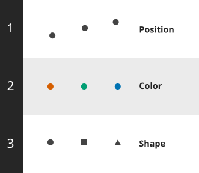

Groups
Learning outcomes
Explain the two main purposes of grouping
Evaluate which grouping strategy is the most suitable in a specific context
Apply grouping strategies using color, shape, and position (including facets) to visually distinguish between categories
Why grouping matters
Investigate a country-level dataset containing the percentage of heavy drinkers and the average remaining life expectancy at age 65
Do you think countries with a high percentage of heavy drinkers have high or low remaining life expectancy at age 65?
What changes when we group by income?
Income level could be a confounding variable
The two main purposes of grouping
- Directly compare observations between groups.
- Reveal patterns within individual groups that are obscured when viewing the data from all groups together.
Simpson’s paradox
Overall
By group
What type of column can we use for grouping?
Grouping data by “categorical” columns
Ordinal: a natural order to the categories (e.g., education levels or letter grades)
Nominal: no order (e.g., types of fruit or color names)
Don’t group data by quantitative columns that hold continuous data (e.g., height or age)
Channels for grouping

Which are used in a traffic light?

Applying grouping strategies
Color
The human brain can detect color differences with little cognitive effort
Color is a preattentive feature
Color doesn’t alter the layout or structure
It’s an efficient way to compare the exact values of data points between groups
Avoid using more than 4-6 colors
What explanation would you suggest for this pattern?
Color
Shape
Shape is a less effective grouping strategy on its own
It can be combined with color to provide an additional visual cue
Combining shape and color
Avoid using color and shape for different variables
Avoid using size to group by a categorical variable
X and Y position
Grouping by position often creates the clearest separation between groups
The grouping column now occupies one positional visual channel
There is only one positional channel left
Giving each group its own lane

Avoid rotated category labels along the x-axis
Faceting
Generates multiple charts (or “facets”), each dedicated to a grouped subset of the data
Particularly effective for highlighting distinct trends and patterns within each subset
Keeps both the x- and y-axes free for other variables
Previous grouping strategies can be used within each facet
Faceting by income
Press ? for shortcuts